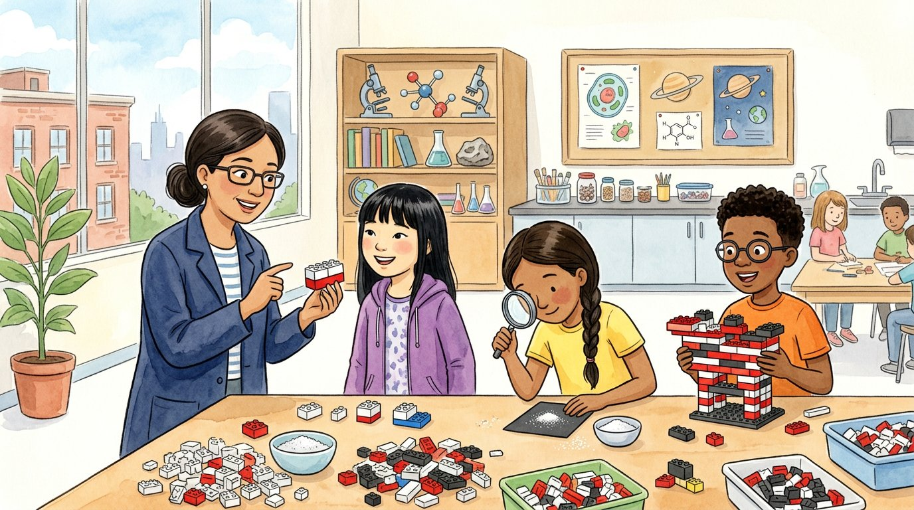

Grade 6 · Science · MS-PS1-1
The invisible building blocks
A story about atoms, molecules and the models scientists use to show them.
Los bloques invisibles. Un cuento sobre los átomos, las moléculas y los modelos que usan los científicos para representarlos.
Science words you will learn
Tap a green word to see what it means.
Toca una palabra verde para ver qué significa. Con la ayuda activada, verás también la definición en español.
The story
El cuento está en inglés. Pulsa «Listen to the story» para escucharlo y toca las palabras verdes cuando no entiendas una.
On the first day of sixth grade science, Ms. Rivera dumped a giant box of plastic building bricks onto the lab table. "Middle school science starts with a big question," she said. "What is everything made of?"
Daniel picked up a red brick. "Bricks?" he joked. "Close," said Ms. Rivera. "Everything around you, your desk, the air and even you, is made of tiny pieces called . They are so small that a million of them lined up would barely cross the period at the end of a sentence."
She held up bricks of three colors. "Scientists know of 118 kinds of atoms, and each kind is called an . Let's say that white is hydrogen, red is oxygen and black is carbon."
Sophia snapped two white bricks onto one red brick. "It looks like a little face with two ears," she said. Ms. Rivera laughed. "Actually, you just built a model of a of water: two hydrogen atoms joined to one oxygen atom. That's why scientists write water as H₂O."
Israel put one black brick between two red ones. "What's mine?" "That's carbon dioxide," said Ms. Rivera, "a gas you breathe out: one carbon atom and two oxygen atoms." "Water and carbon dioxide are both , because each one is made of different kinds of atoms joined together." Then Elías snapped two red bricks together. "Mine is just oxygen and oxygen." "That's the oxygen you breathe in," she said. "It's a molecule, but not a compound, because both atoms are the same element."
Salma had been quietly stacking bricks into a long, flat pattern. "I made a floor," she said. Ms. Rivera picked up a salt shaker. "Salt is a compound too, but it doesn't form small separate molecules. Its atoms connect in a pattern that repeats again and again in every direction, making a ." She shook a few grains onto a black card, and Salma looked at them with a magnifying glass. Every grain was a tiny cube.
Athena frowned. "But atoms aren't really red and white, right?" "Great question," said Ms. Rivera. "Atoms have no colors. Our bricks are a . A model helps us explain something too small to see, but no model is perfect." Athena wrote in her notebook: Real atoms are not bricks, but bricks help us think.
At the end of class, Daniel held up the biggest structure on the table. "What is it?" asked Selena. "A molecule of sugar," he said proudly. Ms. Rivera counted six black bricks, twelve white bricks and six red bricks. "Glucose," she said. "Correct!" Daniel bowed, and two bricks fell off his sugar.
Glossary
- atom
- The smallest piece of an element that is still that element. Everything around you is made of atoms.
- átomo: La parte más pequeña de un elemento que sigue siendo ese elemento. Todo lo que te rodea está hecho de átomos.
- element
- A pure substance made of only one kind of atom, like oxygen, carbon or gold.
- elemento: Una sustancia pura formada por un solo tipo de átomo, como el oxígeno, el carbono o el oro.
- molecule
- Two or more atoms joined together, like a water molecule: two hydrogen atoms and one oxygen atom.
- molécula: Dos o más átomos unidos, como una molécula de agua: dos átomos de hidrógeno y uno de oxígeno.
- compound
- A substance made of two or more different kinds of atoms joined together, like water or table salt.
- compuesto: Una sustancia formada por dos o más tipos distintos de átomos unidos, como el agua o la sal de mesa.
- crystal
- A solid in which the atoms are arranged in a pattern that repeats over and over.
- cristal: Un sólido en el que los átomos están ordenados en un patrón que se repite una y otra vez.
- model
- A drawing or object that helps explain something too small, too big or too far to see.
- modelo: Un dibujo u objeto que ayuda a explicar algo demasiado pequeño, grande o lejano para verlo.
Questions
Choose the correct answer. If you make a mistake, the story shows you where the answer is.
Elige la respuesta correcta. Si te equivocas, el cuento te muestra dónde está la respuesta.
-
Question A. According to Ms. Rivera, what is everything made of?
Según la maestra Rivera, ¿de qué está hecho todo?
Everything around you, including your desk, the air and you, is made of tiny pieces called atoms.
-
Question B. What does the formula H₂O tell you about water?
¿Qué te dice la fórmula H₂O sobre el agua?
A water molecule is two hydrogen atoms joined to one oxygen atom, so scientists write it H₂O.
-
Question C. Why are water and carbon dioxide both compounds?
¿Por qué el agua y el dióxido de carbono son compuestos?
A compound is made of two or more different kinds of atoms joined together.
-
Question D. What makes salt a crystal?
¿Qué hace que la sal sea un cristal?
In salt, the atoms connect in a pattern that repeats again and again in every direction.
-
Question E. Why did Ms. Rivera use bricks if atoms have no colors?
¿Por qué la maestra usó bloques si los átomos no tienen colores?
The bricks are a model: they help explain something too small to see, even though no model is perfect.
Challenge: explain your thinking
Explain with a model
Ammonia is made of one nitrogen atom and three hydrogen atoms. Draw a model of one ammonia molecule, using circles for atoms. Then explain why ammonia is a compound and not an element.
Explica con un modelo. El amoníaco está formado por un átomo de nitrógeno y tres de hidrógeno. Dibuja un modelo de una molécula de amoníaco con círculos como átomos. Después explica por qué el amoníaco es un compuesto y no un elemento.
Answer in your notebook or talk it over with a classmate. Use evidence from the story.
Responde en tu cuaderno o coméntalo con un compañero. Usa evidencia del cuento.
Check your thinking
Your model can show one nitrogen circle joined to three hydrogen circles (NH₃). Ammonia is a compound because it has two different kinds of atoms. An element has only one kind of atom, like the oxygen molecule O₂, which has two oxygen atoms.